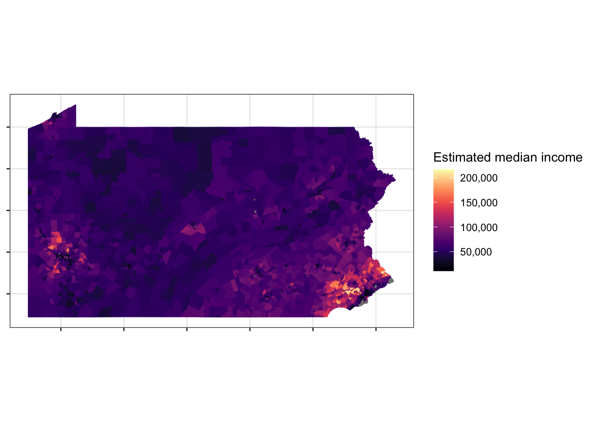

library(tidyverse)
library(tidycensus)
library(tigris)
library(sf)
library(broom)
library(ggfortify)
library(viridis)
library(scales)
library(janitor)
options(tigris_use_cache = TRUE)
theme_set(theme_bw())
census_vars <- load_variables(2010, "sf1", cache = TRUE)This post explores Allegheny County and Pennsylvania through census data. I use the tidycensus and sf packages to collect data from the census API and draw maps with the data.
Setup
Collect data
tidycensus provides a wrapper for the U.S. Census API. You can request a wide variety of data, from economic measures to information about demography. The API also includes data about geographic regions.
This code creates a dataframe of some of the variables available through the census API.
vars <- load_variables(2016, "acs5", cache = TRUE)
vars# A tibble: 22,816 × 4
name label concept geography
<chr> <chr> <chr> <chr>
1 B00001_001 Estimate!!Total UNWEIGHTED SAMP… block gr…
2 B00002_001 Estimate!!Total UNWEIGHTED SAMP… block gr…
3 B01001A_001 Estimate!!Total SEX BY AGE (WHI… tract
4 B01001A_002 Estimate!!Total!!Male SEX BY AGE (WHI… tract
5 B01001A_003 Estimate!!Total!!Male!!Under 5 years SEX BY AGE (WHI… tract
6 B01001A_004 Estimate!!Total!!Male!!5 to 9 years SEX BY AGE (WHI… tract
7 B01001A_005 Estimate!!Total!!Male!!10 to 14 years SEX BY AGE (WHI… tract
8 B01001A_006 Estimate!!Total!!Male!!15 to 17 years SEX BY AGE (WHI… tract
9 B01001A_007 Estimate!!Total!!Male!!18 and 19 years SEX BY AGE (WHI… tract
10 B01001A_008 Estimate!!Total!!Male!!20 to 24 years SEX BY AGE (WHI… tract
# ℹ 22,806 more rowsThis code requests information about the median income of census tracts in Allegheny County. The “geography” argument sets the level of geographic granularity.
allegheny <- get_acs(state = "PA",
county = "Allegheny County",
geography = "tract",
variables = c(median_income = "B19013_001"),
year = 2018,
geometry = TRUE,
cb = FALSE)
head(allegheny)Simple feature collection with 6 features and 5 fields
Geometry type: MULTIPOLYGON
Dimension: XY
Bounding box: xmin: -80.16148 ymin: 40.41478 xmax: -79.88377 ymax: 40.57546
Geodetic CRS: NAD83
GEOID NAME variable
1 42003563200 Census Tract 5632, Allegheny County, Pennsylvania median_income
2 42003980000 Census Tract 9800, Allegheny County, Pennsylvania median_income
3 42003564100 Census Tract 5641, Allegheny County, Pennsylvania median_income
4 42003461000 Census Tract 4610, Allegheny County, Pennsylvania median_income
5 42003437000 Census Tract 4370, Allegheny County, Pennsylvania median_income
6 42003981800 Census Tract 9818, Allegheny County, Pennsylvania median_income
estimate moe geometry
1 29750 8141 MULTIPOLYGON (((-80.00469 4...
2 NA NA MULTIPOLYGON (((-79.90168 4...
3 145179 11268 MULTIPOLYGON (((-80.09943 4...
4 39063 6923 MULTIPOLYGON (((-80.16148 4...
5 106250 11871 MULTIPOLYGON (((-80.12246 4...
6 NA NA MULTIPOLYGON (((-79.90822 4...This code maps the data onto the census tracts.
allegheny %>%
ggplot(aes(fill = estimate, color = estimate)) +
geom_sf() +
scale_fill_viridis("Median household income", option = "magma", labels = comma) +
scale_color_viridis("Median household income", option = "magma", labels = comma) +
labs(title = "Allegheny County",
subtitle = "American Community Survey") +
theme(axis.text = element_blank())
This code requests information about the ethnicities within each census tract. Then, it calculates the percentage of the entire population of a tract that each ethnicity makes up.
racevars <- c(White = "P005003",
Black = "P005004",
Asian = "P005006",
Hispanic = "P004003")
get_decennial(geography = "tract",
variables = racevars,
state = "PA",
county = "Allegheny",
geometry = TRUE,
summary_var = "P001001",
year = 2010,) %>%
mutate(value = value / summary_value,
variable = str_c("percent_", tolower(variable))) -> allegheny_race
head(allegheny_race)Simple feature collection with 6 features and 5 fields
Geometry type: MULTIPOLYGON
Dimension: XY
Bounding box: xmin: -80.12431 ymin: 40.54225 xmax: -79.99058 ymax: 40.61431
Geodetic CRS: NAD83
# A tibble: 6 × 6
GEOID NAME variable value summary_value geometry
<chr> <chr> <chr> <dbl> <dbl> <MULTIPOLYGON [°]>
1 42003412002 Census T… percent… 0.916 4865 (((-80.07936 40.58043, -…
2 42003412002 Census T… percent… 0.00843 4865 (((-80.07936 40.58043, -…
3 42003412002 Census T… percent… 0.0580 4865 (((-80.07936 40.58043, -…
4 42003412002 Census T… percent… 0.0103 4865 (((-80.07936 40.58043, -…
5 42003413100 Census T… percent… 0.878 6609 (((-80.06788 40.60846, -…
6 42003413100 Census T… percent… 0.0172 6609 (((-80.06788 40.60846, -…This code maps that data. The facet_wrap function creates a map for each ethnicity.
#allegheny_race <- st_erase(allegheny_race, allegheny_water)
allegheny_race %>%
ggplot(aes(fill = value, color = value)) +
facet_wrap(~variable) +
geom_sf() +
scale_fill_viridis("Percent", option = "magma", labels = percent) +
scale_color_viridis("Percent", option = "magma", labels = percent) +
theme(axis.text = element_blank())
You can also request data for an entire state. This code requests the median income for each census tract in Pennsylvania.
pa <- get_acs(state = "PA",
geography = "tract",
variables = c(median_income = "B19013_001"),
year = 2018,
geometry = TRUE)
head(pa)Simple feature collection with 6 features and 5 fields
Geometry type: MULTIPOLYGON
Dimension: XY
Bounding box: xmin: -80.14905 ymin: 40.32178 xmax: -75.6175 ymax: 41.07083
Geodetic CRS: NAD83
GEOID NAME variable
1 42019910500 Census Tract 9105, Butler County, Pennsylvania median_income
2 42019912200 Census Tract 9122, Butler County, Pennsylvania median_income
3 42021000100 Census Tract 1, Cambria County, Pennsylvania median_income
4 42021012600 Census Tract 126, Cambria County, Pennsylvania median_income
5 42025020700 Census Tract 207, Carbon County, Pennsylvania median_income
6 42027010800 Census Tract 108, Centre County, Pennsylvania median_income
estimate moe geometry
1 NA NA MULTIPOLYGON (((-80.04897 4...
2 93446 11356 MULTIPOLYGON (((-80.14905 4...
3 12907 1274 MULTIPOLYGON (((-78.92583 4...
4 47143 9880 MULTIPOLYGON (((-78.73584 4...
5 57939 4427 MULTIPOLYGON (((-75.71378 4...
6 53569 4123 MULTIPOLYGON (((-77.55509 4...pa %>%
ggplot(aes(fill = estimate, color = estimate)) +
geom_sf() +
scale_fill_viridis("Estimated median income", option = "magma", label = comma) +
scale_color_viridis("Estimated median income", option = "magma", label = comma) +
theme(axis.text = element_blank())
This code requests ethnicity data for each tract in Pennsylvania.
racevars <- c(White = "P005003",
Black = "P005004",
Asian = "P005006",
Hispanic = "P004003")
get_decennial(geography = "tract",
variables = racevars,
state = "PA",
year = 2010,
geometry = TRUE,
summary_var = "P001001") %>%
mutate(value = value / summary_value,
variable = str_c("percent_", tolower(variable))) -> pa_race
head(pa_race)Simple feature collection with 6 features and 5 fields
Geometry type: MULTIPOLYGON
Dimension: XY
Bounding box: xmin: -80.12431 ymin: 40.54225 xmax: -79.99058 ymax: 40.61431
Geodetic CRS: NAD83
# A tibble: 6 × 6
GEOID NAME variable value summary_value geometry
<chr> <chr> <chr> <dbl> <dbl> <MULTIPOLYGON [°]>
1 42003412002 Census T… percent… 0.916 4865 (((-80.07936 40.58043, -…
2 42003412002 Census T… percent… 0.00843 4865 (((-80.07936 40.58043, -…
3 42003412002 Census T… percent… 0.0580 4865 (((-80.07936 40.58043, -…
4 42003412002 Census T… percent… 0.0103 4865 (((-80.07936 40.58043, -…
5 42003413100 Census T… percent… 0.878 6609 (((-80.06788 40.60846, -…
6 42003413100 Census T… percent… 0.0172 6609 (((-80.06788 40.60846, -…pa_race %>%
ggplot(aes(fill = value, color = value)) +
facet_wrap(~variable) +
geom_sf() +
labs(title = "Major ethncities in Pennsylvania",
subtitle = "Census data") +
scale_fill_viridis("Percent", option = "magma", label = percent) +
scale_color_viridis("Percent", option = "magma", label = percent) +
theme(axis.text = element_blank())
Resources used:
- http://strimas.com/r/tidy-sf/
- https://walkerke.github.io/tidycensus/articles/spatial-data.html
- https://walkerke.github.io/tidycensus/index.html
- https://walkerke.github.io/2017/06/comparing-metros/